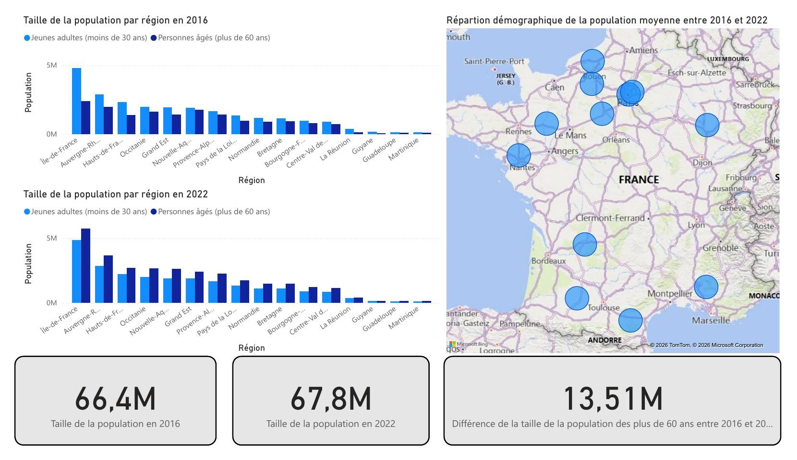

Université Paris CitéIUT de Paris – Rives de Seine
INSEEDonnées & partenariat
Challenge Dataviz 2026
Les 18 régions françaises vieillissent-elles toutes de la même façon ? Une journée, une équipe de quatre, les données INSEE : une infographie Power BI pour répondre.
Voir le détail du projet

- Contexte
- Challenge national organisé par l'Université Paris Cité en partenariat avec l'INSEE, réalisé en une journée en équipe de 4.
- Problématique
- Donner à voir, en une seule infographie, l'évolution démographique contrastée des 18 régions françaises entre 2016 et 2022.
- Données
- Données démographiques régionales en open data (INSEE), 2016–2022.
- Méthodologie
- Nettoyage et structuration des données, sélection des indicateurs les plus lisibles, construction d'un dashboard comparatif et cartographique sous Power BI.
- Résultat
- Infographie collective présentée au challenge, restituant les écarts de croissance démographique entre régions.
- Ce que j'en retiens
- Travailler la restitution visuelle sous forte contrainte de temps, en arbitrant entre exhaustivité et lisibilité.